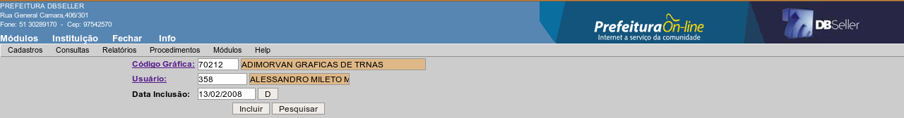

figura 7
MÓDULO FISCALIZAÇÃO
O módulo de Fiscalização foi desenvolvido com o objetivo de otimizar os procedimentos administrativos dos setores de fiscalização, possibilitando um maior planejamento e controle das ações fiscais como:
vistorias
notificações
auto de infração
autorização para impressão de documentos fiscais (AIDOF)
cadastro de alvará sanitário
levantamento fiscal (apuração de ISSQN)
O módulo fiscal concentra o controle de tarefas que podem ser utilizadas por mais de um setor de fiscalização, portanto o controle dos procedimentos é efetuado por departamento, ou seja, os procedimentos criados por um setor, não podem ser consultados e nem alterados por usuários de um outro setor.
O cadastro de fiscais, consiste em criar um banco de informações de quais os servidores utilizam o módulo, sendo ou não do quadro de fiscais, pois nos procedimento de vistorias, notificações, auto de infração e levantamento fiscal, é necessário registrar os fiscais envolvidos.
Cód. Usuário
Para cadastrar um fiscal, basta informar o código do usuário e clicar no botão incluir conforme figura 1. Caso não saiba o código, basta clicar no link do campo correspondente e pesquisar pelo nome.
figura
1
O cadastro de fiscais, não possui rotina de alteração, pois caso se faça necessário por exemplo alterações de nome, departamento, etc, isso deve ser efetuado ou no cadastro de usuário ou no CGM.
Para excluir um usuário do cadastro de fiscais, basta selecionar em uma lista e clicar no botão excluir, porém caso o fiscal selecionado esteja vinculado a algum procedimento (notificação, auto de infração, levantamento fiscal, etc), a exclusão não será permitida.
Possibilita o cadastro das gráficas sediadas ou não no município e seu objetivo é controlar a a liberação de Autorizações para Impressão de Documentos Fiscais (AIDOF), evitando a emissão de notas fiscais em gráficas não cadastradas no Cadastro Geral do Município – CGM.
Esse cadastro consiste basicamente em selecionar um CGM do cadastro geral de contribuintes clicando no link “Código Gráfica”, informar o usuário e a data que está efetivando o cadastro conforme figura 2.

figura
2
O cadastro de Gráficas, segue o mesmo princípio do cadastro de fiscais, ou seja, não possui rotina de alteração, pois caso se faça necessário por exemplo alterações de nome, endereço, etc, isso deve ser efetuado no cadastro do CGM.
O cadastro de procedências consiste em formar uma base de dados com os embasamentos legais utilizados para lavrar um auto de infração e/ou uma notificação. Nesse cadastro são lançadas informações como as descrições dos textos dos artigos da lei, o procedimento que será utilizado (notificação ou auto de infração), além das informações de valores das penalidades quando for o caso.
ABA PROCEDÊNCIA
Código
Esse campo é gerado automático.
Descrição da procedência
Informe nesse campo uma descrição que possibilite sua identificação no momento que for selecioná-la para incluir um auto de infração ou notificação.
Ex.: Art 91 Inciso I Lei Municipal 3282/2007
Departamento
Essa campo será preenchido automaticamente de acordo com o departamento que o usuário que está efetuando o cadastro pertence.
Descrição
Nessa campo, deve ser informado o texto do disposto legal informado na descrição da procedência, ou seja, deve ser transcrito o trecho do texto da lei.
Ex.: Art. 91 - Aos infratores serão aplicadas as seguintes multas:
I - a importância igual a cem por cento (100%) sobre o valor do imposto ao que deixar de recolher, total ou parcialmente, o imposto retido na fonte.
Tipo de Fiscalização
Nesse campo deve ser informado ou selecionado o código do tipo de fiscalização do qual se trata a procedência que está sendo cadastrada.
Ex.: Fiscalização Tributária, Fiscalização de Posturas, Fiscalização Sanitária, etc..
Tipo de Procedimento
Selecionar para qual tipo de procedimento de fiscalização será utilizada a procedência que está sendo cadastrada – Notificação ou Auto de Infração.
figura
3
ABA RECEITAS
Nessa guia, são lançadas informações como receita, valor, tipo de aplicação do valor (fixo ou variável).
Código
Esse campo será preenchido automaticamente com o código da procedência que está sendo incluída.
Código da Receita
Informar nesse campo o código da receita onde será lançado o débito nos casos de auto de infração que contenham valor em moeda.
Ex.: Multa por infrações da Legislação Tributária
Valor Fixo
Nesse campo, deve ser selecionado a forma de aplicação da penalidade no caso de ser em moeda, ou seja, se o valor da multa será fixo (valor pré-determinado pela legislação) ou variável (o valor da multa não está expresso em moeda na legislação e depende de outros fatores). Nesse último caso, o valor será informado no momento da inclusão do auto de infração.
Valor padrão para a receita
No caso de ser selecionado a opção para valor fixo = SIM, deverá ser informado o valor da multa em R$.
Descrição da Receita
Informar nesse campo o nome da receita onde será lançado o débito.
Ex.: Infração da Legislação Tributária
figura
4
Esse cadastro consiste basicamente em registrar quais as áreas de atuação da fiscalização que utilizarão o sistema para controlar as notificações e os autos de infração.
Código do Tipo
Esse código será gerado automaticamente pelo sistema.
Descrição do Tipo
Nesse campo deve ser informado o nome do procedimento de fiscalização.
Ex.:Fiscalização Tributária, Fiscalização de Posturas, Fiscalização Sanitária, etc..
O tipo de vistoria é a informação necessária para identificar no momento de uma inclusão de vistoria se a modalidade é vistoria de localização, vistoria sanitária ou outro tipo de vistoria realizada pela fiscalização., além de outras informações necessárias como vencimento, receita, departamento, etc.
ABA TIPO
Código
Esse campo é gerado automático.
Descrição
Colocar o nome da Tipo de Fiscalização.
Ex.: Vistoria anual de localização
Quantidade de dias para o vencimento
Esse campo corresponde a quantidade de dias que vai transcorrer entre a data de inclusão de uma vistoria e seu vencimento.
Dia/Mês para o vencimento
Esses campo correspondem ao dia e mês que vencem as vistorias, no caso de inclusão geral de vistorias.
Na utilização dos campos para vencimento, deve ser considerado apenas uma opção, ou utiliza-se quantidade de dias para vencimentos ou então utiliza-se dia e mês para vencimento, nunca deve ser preenchido as duas opções no mesmo cadastro.
Departamento
Colocar o código do departamento que pertence essa procedência.
Observação
Colocar alguma observação para o tipo de vistoria.
Código do Tipo de Andamento
Deve ser informado o tipo de andamento correspondente a inclusão de vistoria.
Ex.: Inclusão de Vistoria
Figura
5
A consulta de alvará sanitário pode ser realizada através das seguintes formas:
Número do alvará – preencha o campo com o número do alvará ou selecione em uma lista clicando no link Alvará Sanitário.
Nome/Razão Social – informe o número do CGM ou clique no link para pesquisar pelo nome do contribuinte.
Data da liberação – nessa forma de pesquisa, serão apresentados todos os alvarás cuja data de liberação estiver entre o intervalo das datas informadas nos campos.
Atividade – informe o código da atividade desejada ou clique no link para pesquisar em uma lista. Nessa forma de consulta, serão apresentados todos os alvarás que possuam a atividade informada.
Na rotina de consulta do Alvará Sanitário, é possível fazer a emissão do documento (Alvará), para isso basta clicar no botão “Imprimir alvará” ou então clicar no botão “imprimir” para imprimir relatório com o ficha cadastral.
figura
6
figura
7
Pra consultar uma vistoria, informe uma das chaves de pesquisa conforme demonstrado na figura abaixo. Dependendo da chave de pesquisa utilizada, podem ser apresentados mais de um registros para selecionar, por exemplo, caso a pesquise seja por data da vistoria, serão apresentadas todas as vistorias cadastradas nesse intervalo. A única forma que será apresentado apenas um registro, é se a pesquisa for efetuada pelo código da vistoria.
figura
8
Para consultar um auto de infração, informe o código do auto ou clique no link para pesquisar em uma lista. Outra forma de consulta é informando o número do bloco do talonário informado no momento do cadastramento do auto.
A informações relativas ao auto de infração serão apresentadas conforme figura 9.
figura
9
Para consultar uma notificação, informe o código desejado ou clique no link para pesquisar em uma lista. Outra forma de consulta é informando o número do bloco do talonário informado no momento do cadastramento da Notificação.
As informações relativas a Notificação serão apresentadas conforme figura 10.
figura
10
Esse relatório imprime todos os usuário que estão inseridos no cadastro de fiscais, podendo ser gerado em ordem alfabética ou numérica (código do usuário). No relatório são apresentadas as informações conforme demonstrado na figura 11.
figura
11
Esse relatório imprime todos os contribuintes que estão inseridos no cadastro de gráficas, podendo ser gerado em ordem alfabética ou numérica (código do CGM). No relatório são apresentadas as informações conforme demonstrado na figura 12.
figura
12
Nesse relatório, será impressa a relação dos Alvarás Sanitários, de acordo com as opções de filtros selecionados.
Alvará Sanitário: informe o código do alvará ou selecione em uma lista clicando no link. Com essa opção de filtro, será impresso relatório apenas com o registro informado.
Nome/Razão Social: Informe o número do CGM ou pesquise pelo nome do contribuinte clicando no link. Com essa opção, será impresso relatório apenas com os alvarás vinculados ao contribuinte selecionado.
Atividade: Informe o código da atividade desejada ou selecione na lista clicando no link. Com essa opção, será impresso relatório contendo todos os alvará que possuem a atividade selecionada.
Logradouro: Informe o código do logradouro ou seleciona na lista clicando no link. Com essa opção, será impresso relatório contendo todos os alvarás dos estabelecimentos localizado no logradouro indicado.
Bairro: Informe o código do bairro ou seleciona na lista clicando no link. Com essa opção, será impresso relatório contendo todos os alvarás dos estabelecimentos localizado no bairro indicado.
Data da liberação: Informe o intervalo de datas, dessa forma será impresso relatório contendo todos os alvarás cuja data de liberação estiver dentro do período informado.
Opções: Informe nessa opção quais os alvarás que deseja que sejam impressos no relatório, considerando os filtros selecionados anteriormente, ou seja, pode imprimir apenas os alvarás não baixados, apenas os baixados ou então todos os alvarás.
Tipo: Nessa opção, deve ser selecionado se que imprimir relatório sintético conforme figura 14 ou analítico conforme figura 15.
Atividade: Nessa opção, deverá ser selecionado se quer imprimir no relatório todas as atividades que o alvará possui ou somente a atividade principal. Essa opção também será considerada caso informe como filtro para emissão do relatório uma atividade específica. Se essa opção estiver marcada como TODAS, será impresso no relatório todos os alvarás que contenham a atividade selecionada, caso marque a opção PRINCIPAL, será impresso no relatório somente os alvarás cuja atividade informada no filtro seja a atividade principal.
Ordem: Nessa opção, deve ser selecionada o ordem que que imprimir o relatório, podendo ser pelo número do alvará, pelo número do CGM do contribuinte, pelo código da atividade do alvará ou pela data de liberação do alvará.
figura
13
figura
14 – modelo sintético
figura
15 – modelo analítico
Nesse relatório, será impressa a relação das vistorias lançadas no departamento que está logado e considerando as opções dos filtros selecionados.
ABA TIPO DE VISTORIAS
Código do Tipo: Informe o tipo de vistoria que deseja emitir no relatório. Só estarão disponíveis os tipos de vistorias cadastrados para o departamento que se está logado. Após selecionar o tipo de vistoria, clique no botão lançar para que o filtro seja considerado. Pode ser lançado mais de um tipo de vistoria como filtro simultaneamente.
A opção “com as vistorias selecionadas”ou “sem as vistorias selecionadas” faz a inversão do filtro, ou seja, se for selecionado um tipo de vistorias e marcar com as vistorias selecionadas, será impresso no relatório todas as vistorias do tipo selecionado, já se a opção for sem as vistorias selecionadas, será impresso relatório com todas as vistorias lançadas exceto as que pertencerem ao tipo informado no filtro.
Caso não seja selecionado nenhum tipo de vistoria, serão considerados todos os tipo ligados ao departamento atual. Sempre serão considerados os tipo de vistorias cujo cadastro tenha sido efetuado no departamento que se está logado.
Ordem: Selecione a ordem que quer gerar o relatório, podendo ser pelo código da vistoria, Rua (endereço do contribuinte), Bairro, Nome, ou pelo tipo de vistorias.
Período: Informe nesses campos o período inicial e período final, dessa forma será impresso no relatório todas as vistorias cuja data de lançamento está compreendida entre essas datas.
Tipo: Nessa opção, deve-se selecionar que tipo de relatório deseja emitir, ou seja, sintético conforme demonstrado na figura 17 ou analítico conforme demonstrado na figura 18.
figura
16
ABA RUA DA VISTORIA
Nessa aba, pode ser selecionada uma ou mais ruas que queira usar como filtro para o relatório, considerando também os filtros informados na aba mencionada anteriormente. Nesse filtro, pode-se fazer também a inversão conforme descrito anteriormente.
ABA BAIRRO DA VISTORIA
Nessa aba, pode ser selecionado um ou mais bairros que queira usar como filtro para o relatório, considerando também os filtros informados nas aba mencionadas anteriormente. Nesse filtro, pode-se fazer também a inversão conforme descrito anteriormente.
Após selecionar todos os filtros desejados, deve-se ir novamente para a aba “tipo de vistorias” e clicar no botão processar.
figura
17 – modelo sintético
figura
18 – modelo analítico
É o documento que contem informações cadastrais e financeiras do contribuinte que será levado pelo fiscal ao estabelecimento vistoriado onde será coletada assinatura, fazendo prova da realização da vistoria.
A emissão dos termos pode ser realizada das seguintes maneiras:
Inscrição: Será gerado o termo somente para a inscrição selecionada.
Cód. logradouro: Será gerado termo de vistoria para todas as inscrições que estão localizadas no logradouro selecionado.
Classes: Será gerado o termo de vistorias para todas as inscrições que possuem atividades vinculadas as classes selecionadas. Nessa opção pode-se fazer a inversão do filtro, podendo gerar com as classes selecionadas ou sem as classes selecionadas.
Reemissão: nessa opção, será possível reemitir os termos de vistorias gerados para uma ou mais inscrição relativo ao ano atual, para isso deve-se selecionar a opção SIM.
A rotina de emissão de termo de vistoria, não gera dois termos para a mesma inscrição no mesmo exercício, e dessa forma, se já foi gerado, e o documento foi extraviado, deverá ser utilizada a opção de reemissão.
figura
19
figura
20 – modelo do termo de vistoria
Essa opção imprime um determinado auto de infração cadastrado, e para isso informe o código desejado ou clique no link para selecionar em uma lista. O texto desse documento pode ser configurado na rotina de manutenção de documentos.
Só é possível fazer a impressão de um auto de infração se o mesmo já estiver calculado, pois no documento são impressos os valores correspondentes a aplicação da multa.
figura
21
Nesse relatório, será impresso a relação de todos os autos de infração que foram emitidos dentro do período indicado no campo data do auto e que o prazo para recurso é menor que a data informada no campo prazo menor que a data.
Além dos filtros por data, poderá ser selecionado também o departamento, assim será considerado também o departamento que cadastrou o auto de infração.
figura
22
figura
23
Essa opção imprime uma determinada notificação cadastrada, para isso informe o código desejado ou clique no link para selecionar em uma lista. O texto desse documento pode ser configurado na rotina de manutenção de documentos.
figura
24
Nesse relatório, será impresso a relação de todos as notificações que foram emitidas dentro do período indicado no campo data da notificação e que a o prazo para recurso é menor que a data informada no campo prazo menor que a data.
Além dos filtros por data, poderá ser selecionado também o departamento que cadastrou a notificação.
figura
25
figura
26
Nessa opção, será impresso relatório com todos os alvarás sanitários que tiveram atividades baixadas, cuja data final da atividade esteja compreendida dentro do período informado.
figura
27
Essa opção, emite os dados lançados em um levantamento fiscal, para isso informe o código ou selecione o levantamento desejado em uma lista, clicando no link.

figura
28
Nesse relatório, será impresso a relação de todos os levantamentos fiscais cuja data de inclusão está compreendida entre o período informado.
figura
29
Nessa opção, poderá ser reemitida uma AIDOF.
Nesse relatório, será impresso a relação de todas as inscrições de alvará de localização por logradouro. Para isso selecione os filtros desejados.
Cód Logradouro: Informe o código do logradouro desejado ou selecione na lista clicando no link, após clique no botão lançar. Podem ser informados um ou mais logradouros ou caso não selecione nenhum, será considerado como se estivesse informado todos os logradouros.
Nessa opção pode-se fazer a inversão do filtro, selecionando a opção com as ruas selecionadas ou sem as ruas selecionadas
Selecionar inscrições: nessa opção pode ser selecionado se que gerar o relatório com as inscrições baixadas, com as não baixadas ou todas.
Tipo: nessa opção, escolha que tipo de inscrição deseja imprimir no relatório, ou seja, inscrições de alvarás permanentes ou provisórios.
Caso no filtro logradouro seja selecionado apenas um registro, será impresso na ordem de endereço, ou seja dentro do mesmo logradouro será ordenado pelo número do prédio na ordem crescente. Caso seja selecionado mais de um logradouro, será impresso em ordem crescente pelo código do logradouro e dentro de cada um será ordenado pelo número do prédio na ordem crescente.
figura
30
figura
31
Nesse relatório, será impresso a relação com as AIDOFs liberadas, podendo informar apenas uma inscrição, dessa forma serão apresentadas todas as liberações desse caso específico conforme figura 32 ou então informar um período, dessa forma filtrar por período ou de todas as inscrições conforme figura 33.
figura
32
figura
33
Essa rotina possibilita ao setor competente, efetuar o controle das autorizações para impressão de documentos fiscais liberadas para cada inscrição do cadastro de alvarás, mantendo um histórico cadastral com quantidade, seqüencia, tipo de nota fiscal liberada, bem como a gráfica que realizou a impressão.
As autorizações cadastradas nessa rotina, ficam disponíveis para consulta no cadastro da inscrição no módulo ISSQN.
É possível também nessa rotina efetuar a impressão do documento de liberação.
Código
Esse campo corresponde ao código da AIDOF e será gerado automaticamente em cada inclusão.
Tipo da Nota
Nesse campo deve ser informado ou selecionado o código do tipo da nota fiscal que está sendo liberada. O cadastro de tipos de notas é efetuado no módulo ISSQN.
Ex.: Nota fiscal de prestação de serviço
Inscrição
Informar ou selecionar o número da inscrição municipal correspondente ao alvará que está sendo liberada AIDOF.
Código do Processo
Colocar o código do Processo de Protocolo ou clicar no link para pesquisar.
Data Lançamento
Informar nesse campo a data que está sendo liberada a AIDOF.
Nota Inicial
Informar nesse campo o número da primeira nota fiscal que está sendo liberada. No caso de liberação de AIDOF para inscrições que já possuam outra com o mesmo tipo de nota fiscal em seu cadastro, o sistema traz de forma automática a nota inicial observando a sequência numérica da última nota da AIDOF anterior.
O sistema permite a liberação de AIDOF com tipos de notas diferentes para uma mesma inscrição, fazendo o controle da numeração das notas de forma independente.
Quantidade Solicitada
Informe nesse campo a quantidade de notas fiscais que o contribuinte está solicitando.
Quantidade Liberada
Informe nesse campo a quantidade de notas fiscais que será liberada pela fiscalização. Essa quantidade é que será considerada como válida na liberação para controle da nota final.
Nota Final
A nota final será preenchida automaticamente conforme o número da nota inicial mais a quantidade liberada.
Exemplo
|
nota inicial |
001 |
|
quantidade solicitada |
100 |
|
quantidade liberada |
50 |
|
nota final |
50 |
Código da Gráfica
Informe ou selecione o código da gráfica que será fará a impressão das notas fiscais. Somente aparecerá na lista para selecionar, as gráficas que estão no cadastro de gráficas.
Observação
Campo destinado a digitação de qualquer observação a ser feita pela fiscalização. O conteúdo desse campo será impresso na AIDOF.
Na inclusão de uma AIDOF, no momento em que se seleciona a inscrição, o sistema faz um alerta informando se o contribuinte possui débitos em aberto, porém isso não é impeditivo para a liberação de AIDOF.
Será apresentado também uma lista com as AIDOFs já liberadas para o contribuintes, com código, notas, data, gráfica, etc.
figura
34
Nessa rotina, pode ser alterado qualquer dado informado na inclusão, basta selecionar o código da AIDOF desejado na lista conforme figura 35.
Só é permitida a alteração de uma AIDOF liberada para uma inscrição, desde que não tenha nenhuma liberação posterior para a mesma inscrição com o mesmo tipo de nota fiscal.
Ex.: suponhamos que foi liberada no dia 10/03/2007 a AIDOF número 25 para a inscrição 2222 com o tipo de nota 1 e que no dia 20/06/2007 foi liberada a AIDOF número 80 para a mesma inscrição com o mesmo tipo de nota fiscal, nesse caso, o sistema não permitirá a alteração da AIDOF número 25 pelo motivo de haver uma outra liberação posterior para a mesma inscrição
figura
35
Para cancelar uma AIDOF, deve selecionar o registro desejado na lista conforme figura 8 e digitar alguma informação no campo observação.
A AIDOF cancelada, será desconsiderada para fins de seqüência numérica das notas fiscais para as próximas liberações.
Essa opção será utilizada para manter um cadastro organizado dos estabelecimentos comerciais, industriais, prestadores de serviços ou de profissionais autônomos, que estão sujeitos a inspeção pela vigilância sanitária.
ABA ALVARÁ
Código
Essa campo será gerado automaticamente na inclusão e corresponde ao número do alvará.
Código Próprio
Caso a prefeitura tenha uma numeração paralela dos alvarás sanitários, deverá ser informado nesse campo. O preenchimento não é obrigatório.
Nome / Razão social
Informe o número do CGM ou o nome do contribuinte para incluir o alvará. O contribuinte deve estar cadastrado previamente no cadastro de CGM.
Logradouro / Número/ Bairro / Complemento
Esses campos correspondem a localização do endereço do estabelecimento para onde está sendo liberado o alvará.
Data
Esse campo corresponde a data que está sendo liberada o alvará.
Observação
Nesse campo, pode ser digitada qualquer observação a respeito do cadastro que está sendo realizado. O conteúdo do campo será impresso no alvará. O preenchimento do campo não é obrigatório.
Área
Informe a área que será ocupada pelo estabelecimento. Essa informação não é obrigatória.
Inscrição
Para todo alvará sanitário, obrigatoriamente terá que haver a liberação do respectivo alvará de localização. Esse campo serve para fazer a vinculação entre os dois cadastros, tendo como objetivo a consulta dos débitos, ou seja, quando for realizada a pesquisa financeira pelo alvará de localização, aparecerão também os débitos do alvará sanitário. Esse campo só deve ser preenchido caso o respectivo alvará de localização já esteja cadastrado.
Nesse campo dever ser informado o número do respectivo alvará, caso seu cadastro já tenha sido efetivado. Colocar o código da inscrição se já estiver cadastrada a inscrição. Campo não obrigatório.
figura
36
ABA ATIVIDADES
Código do Alvará Sanitário
Esse campo será carregado automaticamente com o código do alvará gerado na inclusão da primeira guia.
Seqüencial
É o código seqüencial da atividade que está sendo incluída.
Código da Atividade
Informe nesse campo o código ou pesquise em uma lista a atividade que será desenvolvida pelo contribuinte. O cadastro de atividades disponíveis para o alvará sanitário, é o mesmo utilizado para o cadastro de alvará de localização.
Um alvará sanitário pode ter em seu cadastro tantas quantas forem as atividades desenvolvidas pelo contribuinte, ou seja, não tem um limite definido.
Atividade Principal
Cada alvará sanitário deve ter obrigatoriamente uma única atividade do seu cadastro como principal.
Tipo de Atividade
Informe se a atividade que está sendo cadastrada é permanente ou provisória. Caso a atividade seja provisória, deverá ser informado obrigatoriamente a data inicial e data final. Escolher a opção: “Permanente” ou “Provisório”.
Data de Início da Atividade
É a data que o contribuinte começou a desenvolver a atividade que está sendo cadastrada. Toda atividade deverá obrigatoriamente ter uma data de início.
Data Final da Atividade:
Essa data só estará disponível para preenchimento quando for selecionado o tipo de atividade provisório e corresponde a data estimada pelo contribuinte que encerrará seu funcionamento.
Área Liberada
Nesse campo pode ser informada a área utilizada pelo estabelecimento para e desenvolvimento de cada atividade.
figura
37
ABA RESPONSÁVEL TÉCNICO
Nessa guia, deve ser informado o CGM do responsável técnico pelo estabelecimento que está sendo liberado o alvará.
Ex.: na liberação de alvará para uma indústria química, o responsável técnico será o engenheiro químico. Na liberação de alvará para uma drogaria, o responsável técnico será o farmacêutico.
ABA CÁLCULO
Essa guia serve unicamente para processar o cálculo da taxa a ser lançada para o contribuinte, levando em consideração os elementos do cadastro do alvará, para isso basta clicar no botão “calcular”.
figura
38
Nessa rotina, selecione o registro desejado na lista conforme figura 39, sendo ainda possível pesquisar pelo código ou pelo nome do contribuinte. Serão carregadas na tela todas as informações do cadastro selecionado, sendo permitido alterar qualquer campo.
figura
39
O DBPortal adotou o conceito de baixa de alvará a partir da baixa por atividade, ou seja, caso uma inscrição possua mais de uma atividade, você pode efetuar a baixa de duas maneiras:
1 – baixar apenas uma atividade da inscrição;
2 – baixar todas as atividades da inscrição.
No primeiro caso, o alvará continuará ativo, porém em sua lista de atividades continuará mostrando a atividade baixada para fins de consulta e desconsiderando para fins de calculo.
Já no segundo caso, o alvará será considerado baixado, não permitindo assim mais a alteração cadastral, a impressão do alvará, bem como será desconsiderado completamente para efeito de cálculos.
Para efetuar uma baixa, informe o código do alvará ou selecione clicando no link “código do alvará sanitário”.
Data Final
Esse campo corresponde a data do fim da atividade pelo contribuinte.
Código do Processo
Informe o código do processo que foi protocolada a solicitação de baixa.
Tipo de Baixa
Selecione a forma como está sendo efetuada a baixa do alvará : Normal ou Ofício.
Baixa normal é quando a iniciativa de encerramento das atividades parte do contribuinte;
Baixa de ofício é quando a iniciativa da baixa parte do fisco municipal.
Observação
Nesse campo, pode ser digitada qualquer observação a respeito da baixa que está sendo realizado.
Selecione as atividades que deseja baixar e clique no botão “baixar” conforme figura 39
Nessa rotina, é possível reverter um processo de baixa tanto de uma única atividade como de todo um alvará sanitário. Basta informar o código do alvará baixado ou selecionar em uma lista clicando no link “código do alvará sanitário”, selecionar uma ou mais atividades que deseja reativar e clicar no botão processar.
A notificação é o ato administrativo de cientificar o contribuinte do descumprimento de obrigações acessórias, cuja finalidade é dar prazo para regularização da situação do fato constatado. A notificação expedida contra um contribuinte, caso não atendidas as suas exigências, pode ser convertida em AUTO DE INFRAÇÃO.
O cadastro de notificações registra o contribuinte, a data da constatação, o prazo para regularização, as irregularidades constatadas e o(s) fiscal(is) envolvido(s).
Uma notificação pode ser lançada para um CGM, uma inscrição municipal, uma matrícula de imóvel ou para um alvará sanitário. Selecione a forma de lançamento e informe o código desejado ou clique no link para pesquisar.
Ex.: caso queira lançar uma notificação para uma inscrição, informe o código ou selecione o nome do contribuinte conforme figura 40.
figura
40
ABA NOTIFICAÇÃO
Código da Notificação
Essa campo será preenchido automaticamente e corresponde ao número da notificação.
Número do Bloco
Nesse campo pode ser informado o número da notificação do talonário utilizado para notificar um contribuinte.
Prazo Para Recurso
Informe nesse campo, a data que foi concedida ao notificado como prazo para regularização da irregularidade constatada.
Data da Notificação / Hora da Notificação
Informe nesses campos a data e hora que o contribuinte foi notificado.
Observação da Notificação
Nesse campo, pode ser digitado qualquer comentário que se queira fazer a respeito da notificação que está sendo lançada. O conteúdo desse campo pode ser configurado para ser impresso no documento.
Código do Departamento
O código do departamento é preenchido automaticamente com o departamento do usuário que está logado no sistema.
Nome da Pessoa Notificada
Nesse campo deve ser informado a pessoa que recebeu a notificação na empresa ou no local onde está sendo notificado. O sistema sempre traz como sugestão o próprio nome do notificado de acordo com a origem da notificação selecionada na tela anterior, mas permite alteração.
Endereço Registrado
Essas informações correspondem ao endereço que o notificado tem registrado em seu cadastro e não pode ser alterado no momento de uma inclusão de notificação.
Endereço Localizado
Essas informações correspondem ao endereço onde o notificado foi localizado. Sempre serão sugeridas as informações constantes em seu cadastro, porém podem ser alteradas.
figura
41
ABA PROCEDÊNCIA
Código da Notificação
Essa campo corresponde ao número da notificação que foi gerada e será preenchido automaticamente.
Código da Procedência
Informe ou selecione na lista o código da procedência da notificação. Essa informação corresponde ao motivo pelo qual está sendo emitida a notificação contra o notificado, ou seja, foi a infração constatada pelo fiscal.
figura
42
figura
43
ABA FISCAIS
Código do Usuário
Informe o código do fiscal responsável pela notificação ou selecione na lista clicando no link “Cód. do Usuário”.
Observação do Fiscal
Nesse campo, pode ser digitado qualquer comentário feito pelo fiscal a cerca da notificação
ABA TESTEMUNHAS
Nessa guia pode ser informado uma ou mais testemunhas identificadas em uma notificação. A testemunha deve estar cadastrada no CGM. Essa informação é opcional.
Código da Notificação
Esse campo será preenchido automaticamente com o código da notificação que está sendo cadastrada.
Numcgm
Informe o número do CGM da testemunha identificada ou pesquise pelo nome.
Auto de Infração é o ato administrativo de aplicação de penalidades pelo descumprimento de obrigações tributárias acessórias, ou certos deveres não cumpridos, cuja finalidade é de punir o infrator.
A rotina de cadastro de auto de infração, tem como objetivo registrar esse ato e gerar o débito a ser recolhido no prazo determinado, além de efetuar o controle dos contribuintes já autuados nos casos de reincidência.
O cadastro de auto de infração registra o contribuinte, a data da autuação, o prazo para impugnação, as infrações cometidas e o(s) fiscal(is) envolvido(s) e pode ser efetuado, selecionado o contribuinte através de uma inscrição de alvará, CGM, alvará sanitário, matrícula de imóvel ou até mesmo pelo código de uma notificação já cadastrada.
ABA AUTO DE INFRAÇÃO
Código
Essa campo será preenchido automaticamente e corresponde ao número do auto de infração.
Número do Bloco
Nesse campo pode ser informado o número do auto de infração do talonário utilizado para autuar um contribuinte.
Data / Hora
Informe nesses campos a data e hora que o contribuinte foi autuado.
Tipo de Fiscalização
Selecione o tipo de fiscalização na qual o contribuinte que está sendo autuado está sendo enquadrado.
Ex.: fiscalização tributária, fiscalização sanitária, fiscalização de posturas, etc.
Observação do auto
Nesse campo, pode ser digitado qualquer comentário que se queira fazer a respeito do auto de infração que está sendo lançada. O conteúdo desse campo pode ser configurado para ser impresso no documento.
Código do Departamento
O código do departamento é preenchido automaticamente com o departamento do usuário que está logado no sistema.
Nome da Pessoa Autuada
Nesse campo deve ser informado a pessoa que recebeu a auto de infração na empresa ou no local onde está sendo autuado.
Data do Vencimento Atualizada
Informe nesse campo a data de vencimento do débito que será lançada para o autuado relativo ao auto de infração.
Prazo Para Recurso
Informe nesse campo, a data que foi concedida ao autuado como prazo para interpor recurso administrativo contra o auto de infração.
Endereço Registrado
Essas informações correspondem ao endereço que o autuado tem registrado em seu cadastro e não pode ser alterado no momento de uma inclusão do auto de infração.
Endereço Localizado
Essas informações correspondem ao endereço onde o autuado foi localizado. Sempre serão sugeridas as informações constantes em seu cadastro, porém podem ser alteradas.
figura
44
ABA PROCEDÊNCIA
Código do Auto de Infração
Essa campo corresponde ao número do auto de infração que foi gerado e será preenchido automaticamente.
Código da Procedência
Informe ou selecione na lista o código da procedência do auto de infração. Essa informação corresponde ao motivo pelo qual o contribuinte está sendo autuado.
Um auto de infração pode possuir várias procedências.
Ao selecionar a procedência, caso o contribuinte já tenha sido autuado pelo mesmo motivo, será emitido um alerta com a informação de que é reincidente conforme figura 45.
figura
45
Valor
Nesse campo deve ser informado o valor em R$ previsto para a infração cometida pelo contribuinte. Caso tenha sido informado o valor no cadastro da procedência, esse será preenchido automaticamente.
Tipo de Correção
Esse campo corresponde ao tipo de tratamento que será dado em relação ao valor informado da infração, ou seja, o valor informado pode não sofrer nenhuma ação, sofrer um acréscimo ou sofrer uma redução.
Fator
Caso tenha sido selecionado no tipo de correção para o valor sofrer um acréscimo ou uma correção, o fator corresponde ao número de vezes que será aplicada a ação sobre o valor.
Ex.: valor da infração: R$ 500,00
tipo de correção: acréscimo
fator: 2
Com essas informações, significa que o valor previsto para a infração cometida pelo contribuinte é de R$ 500,00, porém por ser reincidente está sendo aplicada a multa em dobro, passando assim seu débito para R$ 1.000,00.
Caso o contribuinte que está sendo autuado já tenha sido autuado em outro momento pelo mesmo motivo (procedência), será emitido um alerta informando da sua reincidência conforme figura 46.
figura
46
figura
47
ABA FISCAIS
Código do Usuário
Informe o código do fiscal responsável pelo auto de infração ou selecione na lista clicando no link “Cód. do Usuário”.
Observação do Fiscal
Nesse campo, pode ser digitado qualquer comentário feito pelo fiscal a cerca do auto de infração.
ABA TESTEMUNHAS
Nessa guia pode ser informado uma ou mais testemunhas identificadas em um auto de infração. A testemunha deve estar cadastrada no CGM. Essa informação é opcional.
Código do Auto de Infração
Esse campo será preenchido automaticamente com o código do auto de infração que está sendo cadastrada.
Numcgm
Informe o número do CGM da testemunha identificada ou pesquise pelo nome.
ABA CÁLCULO
Nessa aba, será gerado o débito correspondente a soma dos valores da cada procedência lançada no auto de infração, com o vencimento informado na aba auto de infração.
O valor lançado pode ser visualizado acessando a Consulta Geral Financeira pelo mesmo código que foi utilizado para incluir o auto de infração, ou seja, CGM, Inscrição, Matrícula, etc.
Para alterar um auto de infração, basta informar o código do auto ou selecionar o item desejado na lista conforme figura 48.
Nessa rotina, é permitida a alteração de qualquer campo, exceto o contribuinte para quem foi emitido o auto. Caso já tenha sido efetuado o cálculo, e o débito já te tenha sido quitado pelo contribuinte, não é é mais permitida alteração. Caso o débito ainda não tenha sido quitado, deverá ser calculado novamente sejam assumidas as novas informações lançadas.
Sempre que um contribuinte recorrer de uma autuação e for julgado procedente, deverá ser processada a baixa do auto para que os débitos gerados sejam baixados
A baixa pode ser efetuada na totalidade do auto ou parcialmente, ou seja, caso o contribuinte tenha sido enquadrado em mais de uma procedência e entre com recurso, e for considerado procedente apenas um dos enquadramentos, a baixa será parcial, caso seja considerado procedente o recurso em todos os enquadramentos, a baixa será total.
Para baixar um auto de infração, informa o código do auto ou selecione o registro desejado na lista conforme figura 48. Informe os seguintes campos:
figura
48
Código do processo
Informe o código do processo de protocolo do recurso.
Baixa
Nesse campo deve ser informada a data que queira registrar como data de baixa.
Procedências
Selecione a procedência que queira baixar do auto e clique no botão baixar.
O auto de infração baixado, continuará sendo mostrado na consulta fiscal do contribuinte, porém será apresentado com a situação “baixado”.
Uma baixa de auto de infração poderá ser revertida, tornando-o ativo novamente, para isso basta acessar no menu a opção cancelar
Essa rotina foi elaborada com a finalidade de controlar as ações fiscais desenvolvidas pelos agentes e auditores fazendários objetivando a homologação nos lançamentos de ISSQN.
A partir do início de uma ação fiscal, é possível informar o faturamento mensal, o imposto recolhido e o sistema apura as diferenças do tributo quando houver, permitindo ao usuário gerar o auto de lançamento, bem como a inscrição do débito na dívida.
Um levantamento fiscal pode ser incluído a partir de uma inscrição municipal ou de um CGM.
ABA LEVANTAMENTO
Levantamento
Esse campo será preenchido automaticamente e corresponde ao código do levantamento que está sendo incluído.
Data do Levantamento
Data da inclusão do levantamento fiscal.
Contato
Informe o nome da pessoa de contato na empresa que é responsável pelas informações.
Período de Início e Período de Fim do Levantamento
Essas datas correspondem ao período que está sendo verificado no levantamento fiscal. Caso o contribuinte tenha pendências em aberto relativo a ISSQN, será substituído pelas informações lançadas que estiverem compreendidas entre o período informado nesses campos.
Processo
Informe o código do processo registrado para o levantamento fiscal.
Observação
Nesse campo, pode ser feita qualquer observação a respeito do levantamento que está sendo lançado.
Espontâneo
Nesse campo deve ser selecionado a forma como foi iniciado o levantamento fiscal, ou seja, se a iniciativa de revisão do ISSQN partiu da Prefeitura a opção deve ser Não e se a iniciativa partiu do próprio contribuinte, a opção deve ser Sim.
Essa opção, pode ser configurada nos parâmetros para ter tratamento diferenciado em relação a multa e juros aplicado sobre os débitos apurados, ou seja, pode-se configurar para lançar um levantamento espontâneo em uma receita e procedência quando for importado para dívida ativa e quando for não espontâneo para outra receita e procedência. Isso é útil quando há uma multa diferente para quando o levantamento não for do tipo espontâneo por exemplo.
figura
49
ABA VALORES
Nessa aba são lançadas informações a respeito dos valores que estão sendo averiguados, como base de cálculo, alíquota, competência, pagamentos, etc.
Seqüencial
Esse campo será gerado automaticamente pelo sistema e corresponde a sequência do registro (competência) que está sendo lançado.
Exercício/Competência
Essas informações correspondem ao ano e mês de competência do ISSQN que está sendo lançado. Não podem estar fora do período lançado como período inicial e final na aba levantamento. A cada registro que for incluído, o sistema passará automaticamente para a próxima competência e para o próximo vencimento.
Vencimentos
Nesse campo deve ser informado a data de vencimento da competência informada nos campos anteriores (exercício/competência).
Descrição
Nesse campo pode ser lançada qualquer observação a respeito do registro que está sendo lançado.
Valor Bruto
Valor total do registro que está sendo lançado (faturamento mensal) nota ou do faturamento mensal.
Caso o contribuinte tenha um mês sem movimento, deverá ser lançado o registro normalmente, porém com o valor bruto zerado.
Alíquota
Deve ser informado nesse campo a alíquota correspondente que a empresa está enquadrada.
Valor Pagar
O valor a pagar será calculado automaticamente aplicando o percentual informado no campo alíquota sobre o valor informado no campo valor bruto.
Valor Pago
Corresponde a soma dos valores pagos pelo contribuinte referente a competência que está sendo lançada. Para informar os valores pagos, o usuário deve clicar no botão “pagamentos” e lançar o valor pago e a data do pagamento efetuado pelo contribuinte, e após clicar no botão “lançar” e em seguida no botão “atualizar”conforme figura 50. Devem ser informados todos os pagamentos efetuados pelo contribuinte relativos a competência que está sendo lançada.
figura
50
Saldo a Pagar
Esse campo será preenchido automaticamente e corresponde ao campo valor a pagar menos o valor pago. Na prática esse é o valor que será lançado como débito para o contribuinte.
Após lançar todas as informações deve clicar no botão incluir. Um registro será inserido e os campos descritos acima ficarão disponíveis para lançar a próxima competência conforme figura 51.
figura
51
Caso necessite fazer qualquer alteração ou excluir um registro já incluído, basta clicar no A para alterar ou E para excluir , no registro desejado.
Na descrição acima, foi demonstrado a forma de lançamento de uma competência pelo valor total do faturamento. Outra forma de efetuar o registro de uma competência é fazer nota a nota, ou seja informar as notas fiscais emitidas na competência, o dia da emissão, o número e o valor de cada nota e dessa forma o valor bruto será preenchido automaticamente com a soma do valor das notas fiscais informadas conforme figura 52
Para cada nota fiscal informada, deve clicar no botão “lançar” e após informar todas as notas, clique no botão “atualizar” para que o campo valor bruto seja preenchido automaticamente com a soma dos valores das notas.
Quando for optado por lançar o registro por notas, o sistema não permite mais informar o valor bruto daquele mês que está sendo digitado.
figura
52
Após lançar todas as competências indicada no período do levantamento, a tela de lançamento dos valores será apresentada conforme demonstrado na figura 53.
figura
53
ABA FISCAIS
Nessa aba são lançados os fiscais envolvidos no levantamento fiscal.
Código
Esse campo será preenchido automaticamente e corresponde ao código do levantamento que está sendo digitado.
Fiscal
Informe o código do fiscal ou selecione em uma lista clicando no link “cód. fiscal”. Um levantamento deverá ter no mínimo um fiscal envolvido.
Observação
Nesse campo pode ser digitada qualquer observação feita pelo fiscal a respeito do levantamento executado.
figura
54
Nessa rotina o sistema substituirá todos os registros de ISSQN Variável do contribuinte pelas informações lançadas no levantamento fiscal, inclusive os registros cujo valor bruto tenha sido zero.
Para exportar um levantamento, basta informar o código ou selecionar em uma lista conforme figura 55.
figura
55
Na lista demonstrada na figura 33, somente serão apresentados os levantamentos que ainda não foram exportados.
Após exportar um levantamento fiscal, não será mais permitida sua exclusão ou sua alteração, caso se faça necessário, deverá ser cancelada a exportação, alterar os registros desejados e após exportar novamente.
Quando é cancelada a exportação de um levantamento, os débitos relativos ao ISSQN Variável voltam para a sua situação original, ou seja, são apresentados novamente na Consulta Geral Financeira os respectivos registros existentes antes do levantamento.
Nessa rotina é realizada a emissão do auto de lançamento de um determinado levantamento fiscal. Para isso, informe o número do levantamento ou selecione em uma lista o registro desejado.
O Auto de Lançamento é composto pela demonstração de todas as informações lançadas no levantamento, conjugado com um texto configurável onde é realizada a notificação do contribuinte do débito apurado conforme figura 56.
figura 56
A Taxa de Fiscalização e Vistoria de Estabelecimento é cobrada face ao exercício do poder de polícia, e tem como fato gerador a diligência do fiscal para vistoriar o estabelecimento e verificar se o mesmo atende aos requisitos exigidos na concessão do Alvará.
A taxa pode ser cobrada também em virtude da fiscalização em estabelecimentos que exijam um controle da por parte da vigilância sanitária.
A rotina de inclusão de vistorias tem a função de registrar as vistorias executadas pelos setores competentes com o objetivo de efetuar o lançamento da taxa anual de vistoria, tanto de localização como sanitária. A vistoria pode ser lançada de duas formas:
1 – Vistoria parcial – nesse caso são lançadas as vistorias caso a caso, conforme são executadas, devendo informar data da execução, TIPO DE VISTORIA e fiscal envolvido. Quando for processado o cálculo, o sistema lança o débito para o contribuinte conforme os valores determinados para a atividade exercida.
2 – Vistoria geral – nesse rotina é efetuado o lançamento geral, tanto da vistoria de localização como sanitária, para os contribuintes de acordo com a CLASSE selecionada e processa automaticamente o cálculo, gerando o valor a ser pago de acordo com cada contribuinte e a atividade que exerça.
Para incluir uma vistoria parcial, selecione primeiro deve-se saber por qual tipo de chave que quer fazer o lançamento, ou seja, inscrição, CGM, sanitário, etc. Após essa escolha, informe o código da chave no campo ou clique no link para pesquisar.
Para facilitar a demonstração, usaremos como exemplo uma vistoria lançada para uma inscrição.
ABA VISTORIAS
Código
Esse campo é gerado automaticamente e corresponde ao número da vistorias que está sendo inserida.
Número do Bloco
Nesse campo pode ser informado o número do termo de vistoria gerado para executar a vistoria em loco.
Data
Informe nesses campos a data e hora que o contribuinte foi vistoriado.
Observação
Nesse campo, pode ser digitado qualquer comentário feito pelo fiscal a cerca da. vistoria.
Contato
Nesse campo pode ser registrado o nome da pessoa que assinou o termo de vistoria no local vistoriado.
Tipo de Vistoria
Colocar o código do Tipo de Vistoria ou clicar no link para pesquisar o tipo desejado. Somente serão disponibilizados os tipos de vistorias que foram cadastrados para o departamento que usuário que está incluindo a vistoria está logado.
Endereço Registrado
Essas informações correspondem ao endereço que o vistoriado tem registrado em seu cadastro e não pode ser alterado no momento de uma inclusão de uma vistoria.
Endereço Localizado
Essas informações correspondem ao endereço onde o vistoriado foi localizado. Sempre serão sugeridas as informações constantes em seu cadastro, porém podem ser alteradas.
figura
57
ABA FISCAIS
Nessa aba são lançados os fiscais envolvidos na vistoria.
Código
Esse campo será preenchido automaticamente e corresponde ao código da vistoria que está sendo digitado.
Fiscal
Informe o código do fiscal ou selecione em uma lista clicando no link “cód. fiscal”.
Observação
Nesse campo pode ser digitada qualquer observação feita pelo fiscal a respeito da vistorias executada.
ABA TESTEMUNHAS
Nessa aba pode ser informado uma ou mais testemunhas identificadas em uma vistoria executada. A testemunha deve estar cadastrada no CGM. Essa informação é opcional.
Código da vistoria
Esse campo será preenchido automaticamente com o código da vistoria que está sendo cadastrada.
Numcgm
Informe o número do CGM da testemunha identificada ou pesquise pelo nome.
ABA CÁLCULO
Nessa aba, será gerado o débito correspondente ao valor da taxa de vistoria configurada para a atividade que o contribuinte exerce.
O valor lançado pode ser visualizado acessando a Consulta Geral Financeira pelo mesmo código que foi utilizado para incluir o auto de infração, ou seja, CGM, Inscrição, Matrícula, etc.
Para alterar uma vistoria, basta selecionar na lista o registro desejado conforme figura 30. Uma vistoria pode sofrer qualquer alteração de conteúdo, exceto na vinculação com o contribuinte vistoriado, ou seja, não pode-se trocar o contribuinte de uma vistoria.
Caso haja mudança na vistoria que implique em alteração no que diz respeito a taxa gerada, deve-se acessar novamente a aba cálculo e gerar novamente o cálculo para que sejam assumidos os novos parâmetros
Ressaltamos que caso a taxa que foi gerada correspondente a vistoria que se está querendo alterar tenha sido quitada as alteração efetuadas não surtirão efeito sobra o valor do débito quitado nem tão pouco será permitido gerar novamente o cálculo.
Caso você selecione para incluir uma vistoria um contribuinte que já tenha sido lançada uma vistoria para o mesmo exercício que deseja incluir, será e emitido um alerta informando que o contribuinte já possui vistoria lançada para o exercício atual e fará a pergunta se deseja incluir uma nova vistoria.
Para anular uma vistoria, informe o código da vistoria desejada ou selecione na lista conforme figura 58. Digite no campo motivo a justificativa para a anulação da vistoria e clique no botão incluir.
Somente é permitida a anulação de vistoria cuja taxa gerada ainda não tenha sido quitada. Caso seja necessário anular uma vistoria já paga, deverá ser efetuado o estorno da arrecadação e somente após, processar a anulação.
figura
58
Na rotina de inclusão geral de vistorias, serão lançadas vistorias para todas as inscrições conforme as classes de atividades selecionadas pelo usuário.
Gerar Vistoria já calculada no exercício
Nessa opção deve-se selecionar se quer ou não gerar vistoria para inscrição que já tenha sido gerada uma vistoria para o mesmo ano que está sendo efetuado o lançamento geral.
Origem
Selecione a origem da vistoria que deseja efetuar o lançamento, ou seja, Localização para vistoria anual de localização ou Sanitária para vistoria anual sanitária.
Tipo de Vistoria
Selecione o tipo de vistoria que deseja efetuar o lançamento. Nessa opção serão apresentados os tipos cadastrados no cadastro de Tipo de Vistoria.
Classes
Selecione as classes que deseja fazer a inclusão das vistorias. As atividades exercidas pelas empresas ou pelos profissionais autônomos são organizadas em classes, dessa forma ao selecionar uma determinada classe para lançar vistoria, todas as inscrições que tiverem em seu cadastro alguma atividade ligada a essa classe, terão a referida vistoria lançada.
Os débitos relativos as vistorias lançadas pela rotina de inclusão geral, terão como data de vencimento a combinação do dia e do mês para vencimento configurados no cadastro de tipos de vistorias com o ano da inclusão da vistoria.
Exemplo:
No tipo de vistoria “Vistoria Anula de Localização”:
Dia para vencimento: 30
Mês para vencimento: março
No caso, as vistorias lançadas terão como data de vencimento 30/03/2008, considerando que estamos falando de lançamento efetuado em 2008.
figura
59
ANOTAÇÕES:
ANOTAÇÕES:
|
DBSeller Serviços de Informática Ltda. – www.dbseller.com.br Rua General Câmara, 406/301 - Porto Alegre/RS - Fone: (51) 3076-5101 |
|